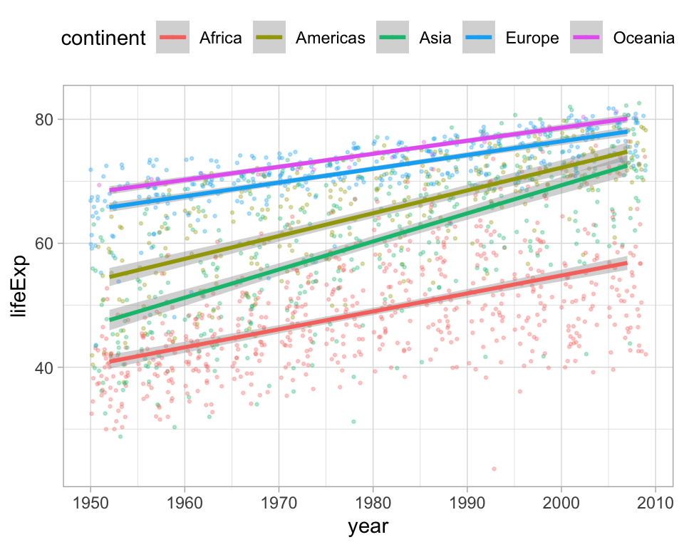

Let’s say you want to compute the slope coefficient for each linear model in this plot. How could you do this?

Inspired by Albert Rapp: https://yards.albert-rapp.de/lm-with-lists.html?q=purrr#lm-with-lists
(Intercept) year
-524.2578461 0.2895293 But this is tedious and repeats a lot of code!
for loopfor loop# split dataframe into a list of dataframes based on the continent
continent_list <- dat %>%
split.data.frame(dat$continent)
# create empty list to store results in
coefficient_list <- list()
# do the loop de loop
for (continent in seq_along(continent_list)){
model <- lm(lifeExp ~ year, data = continent_list[[continent]])
coefficient_list[[continent]] <- coefficients(model)[[2]]
}for loop# split dataframe into a list of dataframes based on the continent
continent_list <- dat %>%
split.data.frame(dat$continent)
# create empty list to store results in
coefficient_list <- list()
# do the loop de loop
for (continent in seq_along(continent_list)){
model <- lm(lifeExp ~ year, data = continent_list[[continent]])
coefficient_list[[continent]] <- coefficients(model)[[2]]
}
# et voila
coefficient_list[[1]]
[1] 0.2895293
[[2]]
[1] 0.3676509
[[3]]
[1] 0.4531224
[[4]]
[1] 0.2219321
[[5]]
[1] 0.2102724For loops have a bad reputation in R. That’s a bit unfair.
For loops are great, and sometimes they are the best tool to use to make your code easy to write, understand, and execute.
But sometimes they can be tricky to write, understand, debug, and slow to execute.
purrr::map insteadthe map() function is actually a for loop*:
[[1]]
[1] 3
[[2]]
[1] 6
[[3]]
[1] 9Any of these ways are fine. Personally, I like the shorthand version best. Note that this way to write anonymous functions is quite new. On stackoverflow, or chatGPT, you will likely get a lot of ~ notation.
map() always returns a list, which is the most generic data structure in R. Almost anything can be saved in a list. But sometimes, we want something else.
That’s what map_lgl(), map_dbl(), map_dfr(), map_chr(), … are here for (see also ?map documentation).
Exercise: How would you do it?
Here’s one idea:
The previous idea was nice, but you still need to create a list of dataframes at the start (continent_list). This is not always desired, and sometimes it would be great to keep things all in one place (data, models, coefficients).
Here’s where you can use the nest() function :)
The previous idea was nice, but you still need to create a list of dataframes at the start (continent list). This is not always desired, and sometimes it would be great to keep things all in one place (data, models, coefficients).
Here’s where you can use the nest() function :)
models %>%
filter(term == "year") %>%
ggplot(aes(estimate, continent, xmin = conf.low, xmax = conf.high)) +
geom_pointrange() +
geom_vline(xintercept = 0, lty = 2) +
expand_limits(x = 0) +
theme_light() +
labs(title = "Coefficient estimates for \"life expectancy ~ year\" for each continent",
y = "")Jenny Bryan’s talk: Thinking inside the box
This package that turns purrr functions into for loops